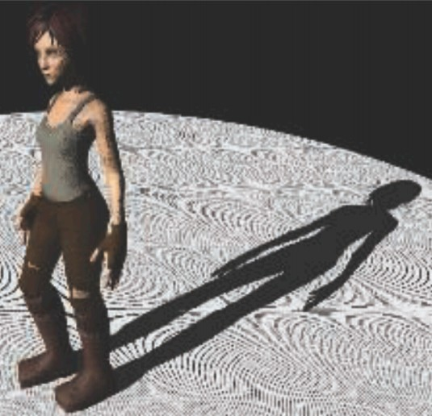
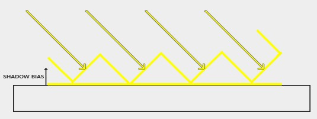
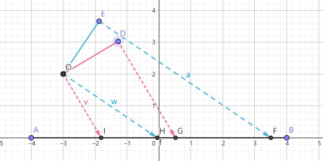
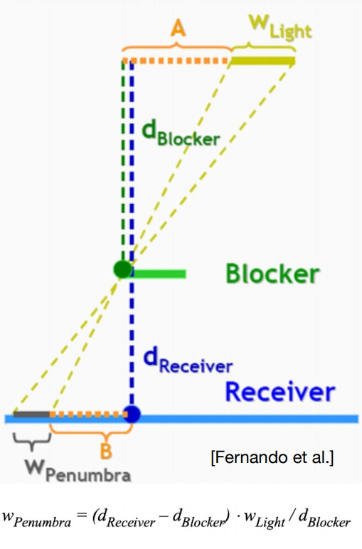
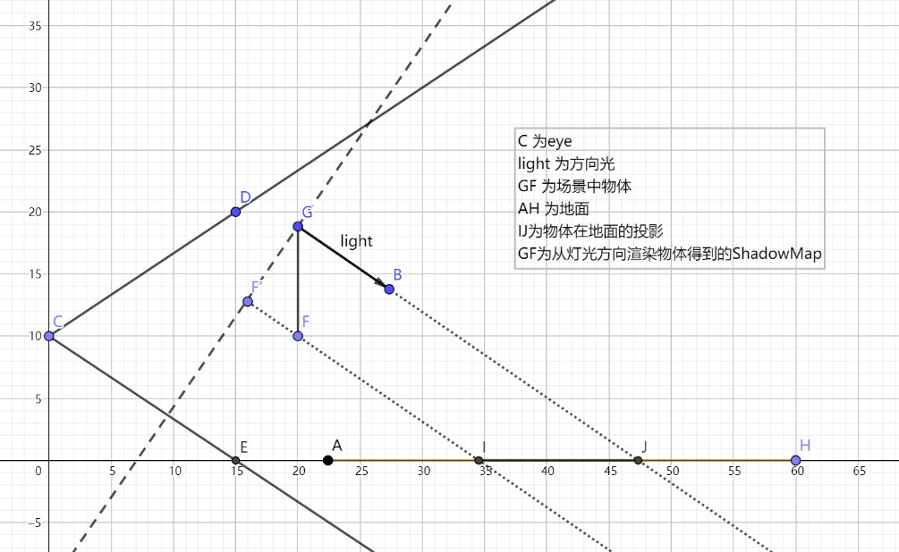
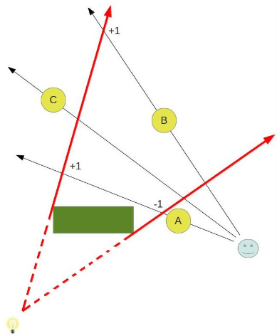
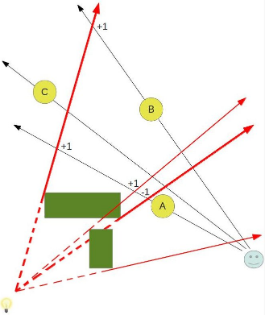

ShadowRendering
Table of Contents
UnityShadow note.
<!– more –>
Shadow Mapping
原理
- 从灯光方向渲染场景，得到 shadow map
- 从摄像机渲染场景时，将渲染的像素转化到灯光坐标系中，执行投影变换后得到像素在灯光坐标系下的深度值 Zl 以及采样 shadowmap 的 uv 坐标
- 比较 shadowmap 中深度值 Z 和 Zl，Z<Zl 说明当前像素在阴影中，否则说明当前像素被照亮
Issues
Self Occlusion
用阴影贴图存储场景到光源的深度信息，其实是在光栅化阶段后，将场景深度信息进行离散化存储到精度有限的深度贴图中，深度贴图中每个图元对应的是一个小区域(假设该区域为 As)中心点的深度值 Z。 渲染物体时，fragment shader 中计算当前片段的深度值，该深度值同样是一个小区域(假设该区域为 Al)中心点的深度值 Zl。无法保证 As 和 Al 区域能一一对应起来，所以，在比较 Z 和 Zl 时，这两个值对应的并不是同一个点的深度。如下图所示：

这就会导致下图中出现黑白相间的条纹:

可以通过将像素深度值往光源方向的反方向偏移来解决该问题，其原理如下图所示：

float closestDepth = texture(shadowMap, projCoords.xy).r; float bias = max(0.05 * (1.0 - dot(normal, lightDir)), 0.005); // N L夹角越小，偏移越小 float shadow = currentDepth - bias > closestDepth ? 1.0 : 0.0;
上面的偏移方法会导致阴影跟着偏移，如下图所示：

还可以通过第二深度贴图来解决 Self Occlusion 问题，该方案可以避免阴影偏移的问题，其原理如下图：

Unity 如何处理的 SelfOcclusion？
- 渲染阴影贴图时，将物体顶点向 normal 反方向偏移，阴影贴图中记录的深度值会比正常情况要大。
- 将近平面前的物体移到近平面，避免阴影显示不完整
float4 UnityClipSpaceShadowCasterPos(float4 vertex, float3 normal) { float4 wPos = mul(unity_ObjectToWorld, vertex); if (unity_LightShadowBias.z != 0.0) { float3 wNormal = UnityObjectToWorldNormal(normal); float3 wLight = normalize(UnityWorldSpaceLightDir(wPos.xyz)); // apply normal offset bias (inset position along the normal) // bias needs to be scaled by sine between normal and light direction // (http://the-witness.net/news/2013/09/shadow-mapping-summary-part-1/) // // unity_LightShadowBias.z contains user-specified normal offset amount // scaled by world space texel size. float shadowCos = dot(wNormal, wLight); float shadowSine = sqrt(1-shadowCos*shadowCos); // 偏移量*sin(L和N的夹角) float normalBias = unity_LightShadowBias.z * shadowSine; // 物体坐标向normal反方向偏移 wPos.xyz -= wNormal * normalBias; } return mul(UNITY_MATRIX_VP, wPos); } float4 UnityApplyLinearShadowBias(float4 clipPos) { #if !(defined(SHADOWS_CUBE) && defined(SHADOWS_CUBE_IN_DEPTH_TEX)) #if defined(UNITY_REVERSED_Z) clipPos.z += max(-1, min(unity_LightShadowBias.x / clipPos.w, 0)); #else clipPos.z += saturate(unity_LightShadowBias.x/clipPos.w); #endif #endif // 将近平面前的物体移到近平面 #if defined(UNITY_REVERSED_Z) float clamped = min(clipPos.z, clipPos.w*UNITY_NEAR_CLIP_VALUE); #else float clamped = max(clipPos.z, clipPos.w*UNITY_NEAR_CLIP_VALUE); #endif clipPos.z = lerp(clipPos.z, clamped, unity_LightShadowBias.y); return clipPos; }
为什么光照方向和表面法线夹角越大，Self Occlusion 越严重？
如下图所示光照方向和表面法线夹角越大，阴影贴图所对应的场景区域越大，每个阴影图元对应的区域越大。摄像机片段深度值和阴影深度值相差就越大。shadow bias 比较小的化，依然无法避免 Self Occlusion 问题。

./ShadowRendering/shadow_map_self_occlusion_02.ggb
Aliasing
使用 PCF 来解决 Aliasing。PCF 原理参考下文。
Cascaded Shadow Mapping
原理
场景中近处物体的阴影精度要求比较高，远处物体的阴影精度不需要太高。可以按照下图所示方法将视景体分为 Near、Middle、Far 三部分，分别对场景进行阴影渲染，近处阴影渲染所涵盖的场景比较小，远处阴影渲染所涵盖的场景范围比较大，假如各部分所占阴影贴图空间相同，则近处部分的阴影精度自然要高。我们甚至可以为近处分配更多的阴影贴图空间，更进一步提高近处阴影进度。

Unity ScreenSpaceShadows
原理
- 在屏幕空间，根据深度缓冲区内容 和 ShadowMap 内容，得到屏幕空间的阴影。
- 渲染物体时，直接采样屏幕空间阴影贴图得到阴影值。
- Unity 为什么使用 screen space shadow？ https://www.zhihu.com/question/289621666
Percentage Closer Filter
原理
如何生成 2D Triangle Filter Kernel?
import numpy as np def triangle_kernel(kerlen): r = np.arange(kerlen) kernel1d = (kerlen + 1 - np.abs(r - r[::-1])) / 2 kernel2d = np.outer(kernel1d, kernel1d) kernel2d /= kernel2d.sum() return kernel2d print(triangle_kernel(4)) # [[0.02777778 0.05555556 0.05555556 0.02777778] # [0.05555556 0.11111111 0.11111111 0.05555556] # [0.05555556 0.11111111 0.11111111 0.05555556] # [0.02777778 0.05555556 0.05555556 0.02777778]] print(triangle_kernel(5)) # [[0.01234568 0.02469136 0.03703704 0.02469136 0.01234568] # [0.02469136 0.04938272 0.07407407 0.04938272 0.02469136] # [0.03703704 0.07407407 0.11111111 0.07407407 0.03703704] # [0.02469136 0.04938272 0.07407407 0.04938272 0.02469136] # [0.01234568 0.02469136 0.03703704 0.02469136 0.01234568]]
如何生成 2D Gaussian Filter Kernel?
import numpy as np import scipy.stats as st def gkern(kernlen=21, nsig=3): """Returns a 2D Gaussian kernel.""" x = np.linspace(-nsig, nsig, kernlen+1) kern1d = np.diff(st.norm.cdf(x)) kern2d = np.outer(kern1d, kern1d) return kern2d/kern2d.sum() print(gkern(3,3))
Percentage Closer Soft Shadow
原理
依据投影点和遮挡物之间的距离计算 PCF 采样宽度，距离越远采样宽度越大，阴影越模糊；距离越近采样宽度越小，阴影越锐利。

Planar Shadow
原理
ERROR: 反射摄像机渲染结果和场景摄像机相同？
reflectionCam.Render() 会触发 OnWillRenderObject()，导致两次反射抵消了反射效果，即相当于执行了如下代码：
reflectionCam.worldToCameraMatrix = Camera.current.worldToCameraMatrix * reflectMatrix * reflectMatrix;。
使用如下方法解决该 Bug：
void OnWillRenderObject() { // 避免使用激活的摄像机进行渲染 if(Camera.current == reflectionCam) { return; } // ...... }
ERROR: 穿过平面的物体，反射效果错误
错误效果如下：

Dynamic Shadow Projector
原理
- 从灯光方向，对投影物体进行渲染，结果放入 RenderTexture _ShadowRT 中
- 使用 Projector 渲染阴影接受物体，将_ShadowRT 投影到阴影接受物体上
：
在正常渲染地面(假设地面为阴影接收物)时，将像素对应的坐标变换到 Projector 的屏幕空间，使用该屏幕空间坐标直接对_ShadowRT 进行采样就得到了当前渲染位置的阴影值。

./ShadowRendering/projector-shadow.gba
v2f vert(float4 vertex:POSITION) { v2f o; o.pos = UnityObjectToClipPos(vertex); o.sproj = mul(unity_Projector, vertex); UNITY_TRANSFER_FOG(o,o.pos); return o; } float4 frag(v2f i):SV_TARGET { half4 shadowCol = tex2Dproj(_ShadowTex, UNITY_PROJ_COORD(i.sproj)); half maskCol = tex2Dproj(_FalloffTex, UNITY_PROJ_COORD(i.sproj)).r; half a = shadowCol.r * maskCol; float c = 1.0 - _Intensity * a; UNITY_APPLY_FOG_COLOR(i.fogCoord, c, fixed4(1,1,1,1)); return c; }
在正常渲染裤子的顶点时，顺便变换到投影器的屏幕空间，然后再渲染裤子的片段处理函数中将位于投影器屏幕空间的像素都换成眼睛即可。
Stencil Shadow Volume
原理
阴影锥算法的思想是延伸光照在物体上出现的锥轮廓，并通过一系列简单的 stencil 操作将其渲染到 stencil buffer。关键思想是如果物体在阴影锥内部（在阴影中），则阴影锥前面的几何体多边形赢得深度测试，阴影锥后面的多边形则无法通过该深度测试。

Tips: 需要为所有物体都生成一个阴影锥，上图只显示了为 B 生成的阴影锥。
该方法适用于多个遮挡物的情况。如下图所示：

- Stencil Shadow Volume en https://ogldev.org/www/tutorial40/tutorial40.html
- Stencil Shadow Volume cn https://zhuanlan.zhihu.com/p/438178425
- Shadow Volumes 技术没有成为主流的原因是什么？ https://www.zhihu.com/question/412479769
参考资料
- Unity 实时阴影实现——Cascaded Shadow Mapping https://zhuanlan.zhihu.com/p/45673049
- Cascaded Shadow Maps https://docs.microsoft.com/zh-cn/windows/desktop/DxTechArts/cascaded-shadow-maps
- Cascaded Shadow Maps http://ogldev.atspace.co.uk/www/tutorial49/tutorial49.html
- Unity3D 阴影和深度纹理总结 https://gameinstitute.qq.com/community/detail/117485
- Unity 的 Shader 如何控制投影颜色 https://www.cnblogs.com/sitt/p/4699369.html